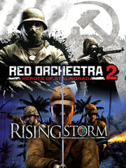

Rising Storm/Red Orchestra 2 Multiplayer
Rising Storm/Red Orchestra 2 Multiplayer
Detalles
|  | |
| Tiempo de juego | 4h 16m 0s |
| Última actividad | 18/06/2014 16:46:18 |
| Añadido | 23/07/2021 17:30:16 |
| Modificado | Nunca |
| Estado de finalización | Jugado |
| Librería | Steam |
| Fuente | Steam |
| Plataforma | PC (Windows) |
| Fecha de lanzamiento | 13/09/2011 |
| Puntuación de la Comunidad | 91 |
| Puntuación de la Crítica | 76 |
| Puntuación de usuario | |
| Género | Action Massively Multiplayer Simulation |
| Desarrollador | Tripwire Interactive |
| Editor | Tripwire Interactive |
| Característica | Achievements Includes Level Editor Multi-Player Online Pvp Pvp Stats Trading Cards Valve Anti-Cheat Enabled Workshop |
| Enlaces | Community Hub Discussions Guides News Store Page PCGamingWiki Achievements Workshop |
| Tag | |
Descripción
D-Day Anniversary 2016 Update for Heroes of the West
To commemorate the 72nd anniversary of the D-Day landings in Normandy, we have introduced 2 new maps, a new vehicles and a whole bunch of detail changes and updates for the Heroes of the West mod! The new maps are:
- Caen Outskirts: a combined arms map featuring the British in a gruelling fight to break out from the Normandy beachhead in summer 1944. The map also introduces the British Bren Carrier troop transport.
- Hill 400: this map recreates the bitter fighting in the winter of 1944 with the 2d Ranger Battalion struggling against Axis forces in the Hurtgen Forest.
If you own RO2/RS the mod is completely free to you. To get your copy, simply head for the store page: HERE
Heroes of the West mod added
Free user-created mod
Now released - the user-generated mod, Heroes of the West. Produced by the RO2/RS community, with a little help and some assets from Tripwire and Antimatter Games. Bringing RO2 warfare to the Western Front, the mod adds 4 new maps, 5 new character sets and 10 new weapons - with lots more to come!
If you already own RO2/RS, you can simply install the mod here:
http://store.steampowered.com/app/440090/
Barrikady

October 2015: For the next update to RO2 and Rising Storm, we have a new Beta map - Barrikady - plus a bunch of other fixes. The new map can be pre-loaded as part of the Beta Community Map Pack, or will simply be downloaded as needed when it appears in a server rotation.
RO2 Contains ALL Rising Storm Content
Any purchase of RO2 through this Steam Store page, from 23 Sep 2014, will contain ALL Rising Storm multiplayer content as well as the RO2 content.
All those who bought older RO2 packages (through Steam or elsewhere, at the old, lower, single-game, price) will have RIFLE-ONLY access to Rising Storm, NOT the whole game. To upgrade to get full access to all the Rising Storm content, you will need to buy Rising Storm now as well:
http://store.steampowered.com/app/234510/
Game of the Year Edition

May 2014: To celebrate the award of PC Gamer's "Multiplayer Game of the Year 2013", we have update Rising Storm to the Game of the Year edition. This already includes all the previous content updates (Island Assault and the Counterattack mapping contest maps) and now adds in the following:
- 2 transport vehicles for the RO2 factions - Universal Carrier for the Russians and SdKfz-251 halftrack for the Germans
- 3 existing maps updated for the transports (Arad 2, Barashka and Rakowice
- New map - Maggot Hill, featuring Merrill's Marauders at Nhpum Ga, April 1944
- New Search & Destroy gameplay mode - a single life game-type in which teams take turns attempting to destroy one of multiple objectives by planting an explosive. A full set of 10 maps configured for this new game mode
- 3 new community maps now official - Phosphate Plant and Otori Shima featuring US vs Japanese and Myshkova River featuring Russians vs Germans

December 2013: Now that the $35,000 Counterattack Mapping Contest for RO2 has concluded and helped us find the best community made maps on Steam Workshop, Tripwire have worked with the original map makers to polish them up and add them into Red Orchestra 2 as Official Custom Maps. These are some of the best - adding some great new gameplay. All are included for free for everyone who owns the game. Don't forget there are more great community maps and content on Steam Workshop, so head on over there now!
This is the second Counterattack Map Contest Pack and completes the set, bringing you 3 more maps:
- Bridges of Druzhina - a massive combined arms map, Russians attacking across open ground, a river and right through a small city, supported by armor; the Germans dug in and steadily pushed back. A classic!
- Cold Steel - a Soviet assault against German infantry dug in to a huge factory complex, fighting across open spaces and then inside individual factory buildings.
- Gumrak Station - a re-imagining of a classic Ostfront map, moved to Gumrak Station, to the west of Stalingrad.
Digital Deluxe Edition
Steam Digital Deluxe Edition adds the following extras on top of the Standard Edition:
- Day 1 Unlock of the Elite Assault Weapons (MKb 42(H) and AVT-40) and Semi Auto Sniper Weapons (SVT-40 and G 41(W):

- Team Fortress 2 German and Russian hats ("Genuine" if bought during pre-purchase):
- Two new characters for Killing Floor - Russian and German Soldier Re-enactors:


New Game Modes
This new edition adds a whole set of extra features, available for free to all owners of the game, including two new game modes:
- “Action” mode – Featuring a crosshair, easier aiming and toned down recoil, reduced damage and open access to a wide range of weaponry Action mode is the perfect first step for players into the world of Red Orchestra.
- “Classic” mode blends the gameplay innovations of the new game with the tactical and edgy gameplay of the original giving the fans of the first game exactly what they want.
- Mamayev Kurgan – complete new map, featuring both close-quarters battles in trenches and bunkers, as well as longer ranged combat across the famous hill in Stalingrad.
- Refined and improved gameplay across the board, vehicle improvements, and way better performance and polish. We listened to the community and based on their feedback refined and tweaked almost every major feature in the game!
About the Game

Red Orchestra 2 focuses on the Battle of Stalingrad and the surrounding operations, both German and Russian, from July 1942 to February 1943.
The game allows the player to experience one of the most brutal battles in all of human history. Delivering unrivalled accuracy and attention to detail, along with gritty, vicious combat in multiplayer modes the game will feature everything from quick, brutal firefights to more intricate and challenging tactical modes.
Red Orchestra multiplayer taken to new heights
- The brutal, gritty Red Orchestra gameplay has been enhanced, expanded and made more accessible.
- Gameplay modes as instantly recognizable as Firefight (Tripwire's take on Team Death Match), single-life gaming redefined in Countdown mode - and the Territory mode already beloved by the hundreds of thousands of Red Orchestra players worldwide.

Immersive First Person Tank Warfare
- Experience what it was like to fight inside one of these metal beasts in WWII with the most immersive first person tank warfare ever created.
- Fully modeled 3d interiors, a full AI crew, and advanced armor and damage systems create a unique tanking experience.
Persistent Stats Tracking and Player Progression
- Persistence constantly gives the gamer something to strive for and keeps them playing.
- Grow in rank, earn achievements, improve your abilities, and become a Hero!

First person cover system
- Experience the ultimate firefights that a cover system allows, from the immersion of a first person view.
- Peek or blind fire over and around cover and more.
Unique Focus – the Battle of Stalingrad in depth
- Red Orchestra 2 takes the familiar WWII genre into a unique direction. Far removed from the well-trodden Normandy setting, gameplay is based on fresh scenarios and actions the player has never experienced before.
- Follow the German army as they assault the city of Stalingrad, to the banks of the Volga. Follow the Soviet army as it holds the city against all the odds then destroys the Axis forces.

WWII weaponry redefined
- True to life ballistics, bullet penetration, breathing, adjustable sights, free aim, weapon bracing, photo-real graphics and more, create WWII weaponry that has no equal.
Heroes
- Achieve the ultimate goal and become a Hero online. Players with hero status inspire troops around them and cause fear in their enemies.
- Heroes have access to the best and rarest weapons and will stand out visually from the rest of the soldiers.

Morale
- Experience what it is like to be a soldier in one of the bloodiest conflicts in history and the importance of a soldier’s state of mind and how it can turn the tide of battle.
- Suppress your enemies and gain the advantage in combat!
Enhanced Unreal® Engine™ 3
- Built on an enhanced version of Unreal Engine 3 the game features cutting edge visuals and features.